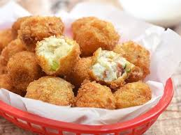

Loaded Mashed Potato Balls
Recipe by Amber Saleem

Ingredients
- Cooked Chicken1/2 cup(diced)
- Leftover mashed Potatoes3 cups
- Shredded cheddar cheese1 cup
- Black pepper powder1/2 tsp
- Saltto taste
- Eggs2 large(beaten)
- Breadcrumbsas required
- Oilfor deep fry
Instructions
- In a large bowl mix cooked chicken, mashed potato, cheddar cheese, black pepper and salt.
- Make small balls out of the mixture.
- Dip balls in egg then coat in breadcrumbs.
- Heat oil in a wok and deep fry balls in badges.
- Serve warm with tomato ketchup.